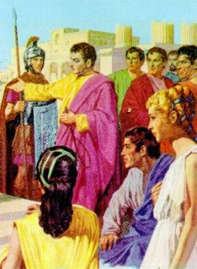

Juliana était le
seulement fille de Antonio et Silvana Taglivine. Toujours a travaillé dans le
champ pour aider ses parents avec les dápenses de la maison, malgré des
difficultés pour négocier leurs produits agricoles. Elle menait une vie très
simple et ne se souciait pas avec la vanité. Habillait de une façon simple, et
ne usait pas aucun maquillage pour mettre en valeur sa visage. Son cheveux
étaient châtaigne obscur et lisses, capricieusement arrangés dans la tète,
quelquefois avec le aide de quelque modeste ornement.
parents avec les dápenses de la maison, malgré des
difficultés pour négocier leurs produits agricoles. Elle menait une vie très
simple et ne se souciait pas avec la vanité. Habillait de une façon simple, et
ne usait pas aucun maquillage pour mettre en valeur sa visage. Son cheveux
étaient châtaigne obscur et lisses, capricieusement arrangés dans la tète,
quelquefois avec le aide de quelque modeste ornement.
Quand son père est mort elle a dáplacé avec sa mère à Listra où elles ont été vivre dans une propriété rurale qui appartenait le un frère de son père - son oncle Orlando Taglivine. La mère et la fille ont commencé à travailler dans le champ de vigne, en gagnant le nécessaire pour une vie modeste, mais digne et avec paix.
La propriété était approximativement à six kilomètres loin de la ville. Toutes les semaines, principalement dans les matins ensoleillés de dimanche, après avoir fait la tâche quotidienne, elle allait pour une promenade hebdomadaire, pour apprécier le mouvement citadin et connaître les nouveautés du commerce.
Il avait quatre années qui elle était en ayant vécu pour là , et bien qu'elle possédait des excellentes qualités personnelles, mais elle n'avait pas dácidá se marier, elle échappait poliment des flirts des garçons que se approchaient. Parce qu’aussi, encore n’avait pas apparu aucun jeune intéressant que le ait eu attiré l’attention et le ait eu réveillé un fort sentiment de sympathie, en éteignant pour toujours le souvenir du grand amour de son jeunesse.
Elle gardait dans sa mémoire cet amour de sa jeunesse avec beaucoup de tendresse et un immense sentiment affectueux... Toutes les fois que pensait dans lui, elle sentait le manque de le sourire sincère et séduisant de Longinus, aussi de ses attitudes correctes et de ses mots loyaux et prudents... Ils étaient les échos de un passé que ne permettait pas elle de rêver, dá à la réalité actuelle, et aussi, par la distance qui les séparaient, par la pauvreté de les deux et surtout, par le manque de nouvelles de l'un à l'autre, le que lentement suffoquait dans leurs cœurs le que encore restait de cet amour de sa vie.

De l'autre côté, dans les derniers dimanches, sa vie a commencé le prendre une nouvelle direction. Un prédicateur important a surgi dans Listra. Il était un homme avec une petite stature et avait peu de barbe, mais avec un grand charme personnel, malgré de posséder dans son visage des plis profonds, que étaient les signaux évidents d'un vivre très difficile. Il avait un grand vigour, et parlait avec une facilité remarquable, avec un style transparent et rempli de clarté et intelligence, que impressionnait et captivait, parce qu'il s’exprimait avec simplicité et une logique incontestable, d'une manière admirablement cohérente. Il s’appelait Paul et il était un apôtre du SEIGNEUR JÉSUS.
Dans le dábut, Juliana et sa mère aimaient dáécouter le que lui disait, mais elles ne comprendraient pas complètement les mots de lui. Les deux étaient des païens, et seulement savaient des dieux païens, principalement Junon et Minerve, ceux-là qu'ils aimaient-mieux. Mais, dans la séquence de ces audiences publiques, Juliana a commencé à se sentir chaque fois plus attiré par las verités que cet homme enseignait. Et a été ainsi, que après le septième dimanche, Juliana et sa mère, au-delà de beaucoup des autres personnes, ont demandá que aient été introduits dans cette nouvelle religion et aient reçu le Sacrement de Baptême, et alors, ont commencé à assister avec normalité aux rencontres de la communauté fondá par Paul de Tarso.
Ce groupe, timide dans le
commencement, a commencé à grandir dans nombre des personnes et aussi, dans enthousiasme pour la Doctrine du DIEU. Ils étaient dans la bonne
route avec l’assurance et la protection du CREATEUR.
enthousiasme pour la Doctrine du DIEU. Ils étaient dans la bonne
route avec l’assurance et la protection du CREATEUR.
Cependant, avec la croissance de la communauté ont surgi les problèmes, principalement le besoin d'obtenir une place où ils aient pu rassembler, en étant abrités de la chaleur et de la pluie.
En épointant positivement, Silvana et Juliana ont pris des initiatives en donnant demi de leurs héritages, que même en étant une petit valeur correspondant aux des ressources pécuniaires, c'était sans doute, un généreux et stimulant geste pour aider l'Église naissant.
Et avec beaucoup d'attachement, à partir de ce moment-là , les deux ont commencé à consacrer leurs temps libres pour aider dans la communauté que a continué à grandir avec enthousiasme au long des mois et des années.